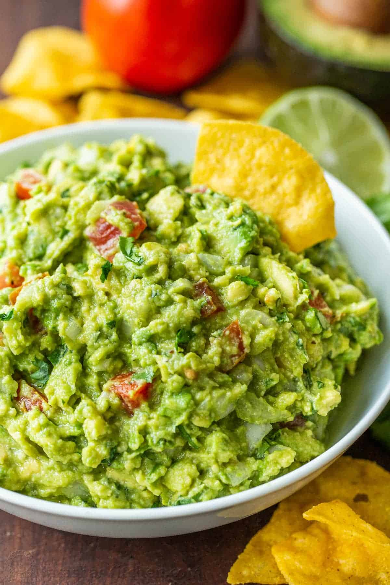

Guacamole

Equal parts tasty and creamy, this is
what millenials
forego homeloans for.
Ingredients
- 3 avocados - peeled, pitted
and mashed
- 1 lime, juiced
- 1 teaspoon salt
- ½ cup diced onion
- 3 tablespoons chopped fresh
cilantro
- 2 roma tomatoes, diced
- 1 teaspoon minced garlic
- 1 pinch ground cayenne pepper
The Process
- In a medium bowl, mash together
the avocados, lime juice, and salt.
- Mix in onion, cilantro, tomatoes,
and garlic.
- Stir in the cayenne pepper.
- Refrigerate 1 hour for best flavor,
or serve immediately (we know
you want to).